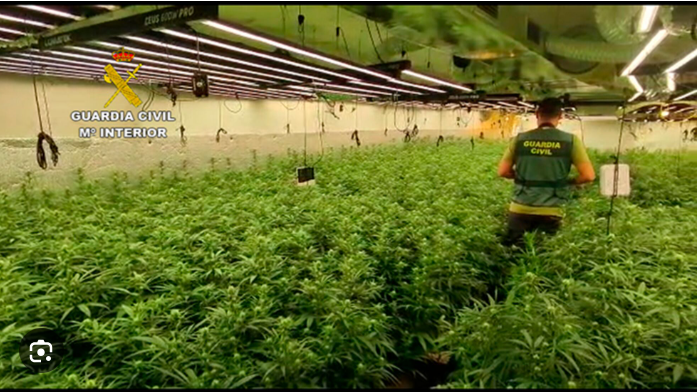

¿por qué las familias trabajan en los sembradios de marihuana con el narcotrafico?
Las familias en zonas serranas acceden a trabajar con el narcotráfico principalmente por la falta de oportunidades económicas formales,
la marginación social y la ausencia del Estado, que dejan un vacío que el crimen organizado llena con ofertas de empleo y un sentido de pertenencia.

¿Por qué el narco recluta a miles de menores en México?
cerca de 24.000, se integraron al Cartel de Sinaloa y enseguida se encuentran los que participan con Los Zetas que suman 17.000.
Otros 7.500 se ubican en las filas de La Familia Michoacana y el resto se distribuyen en otros carteles, según ha documentado esta asociación.
Muchos fueron víctimas de secuestros masivos; en otros casos sus familias recibieron amenazas para obligarles a trabajar para delincuentes,
algunos más se unieron por miedo o porque era su única alternativa de empleo.
También hay casos, en que los adolescentes desean unirse a las bandas. Pero el común denominador es que son víctimas o victimarios que padecen la ausencia del Estado,
cuya obligación es protegerles.